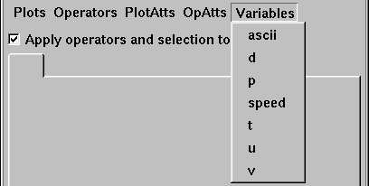

When examining a plot, you might want to look at another variable. For example, you might want to switch from looking at density to pressure. VisIt allows the plot variable to be changed without having to delete and recreate the plot. To change the plot variable, first make sure the plot is active, then select a new variable from the available variable names in the Variable menu (figure). The Variable menu contains only the variables from the database that are compatible with the plot.
|  |
| Figure 4 |